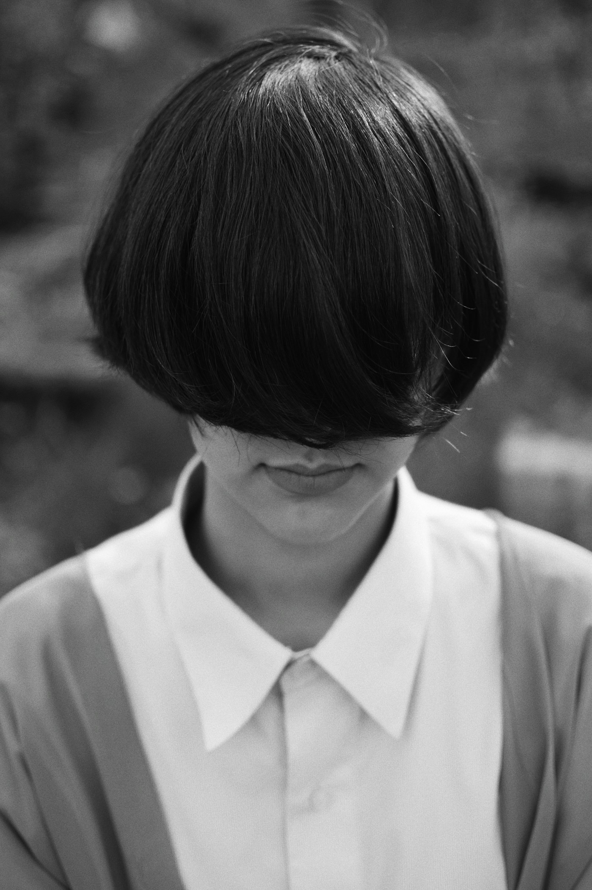
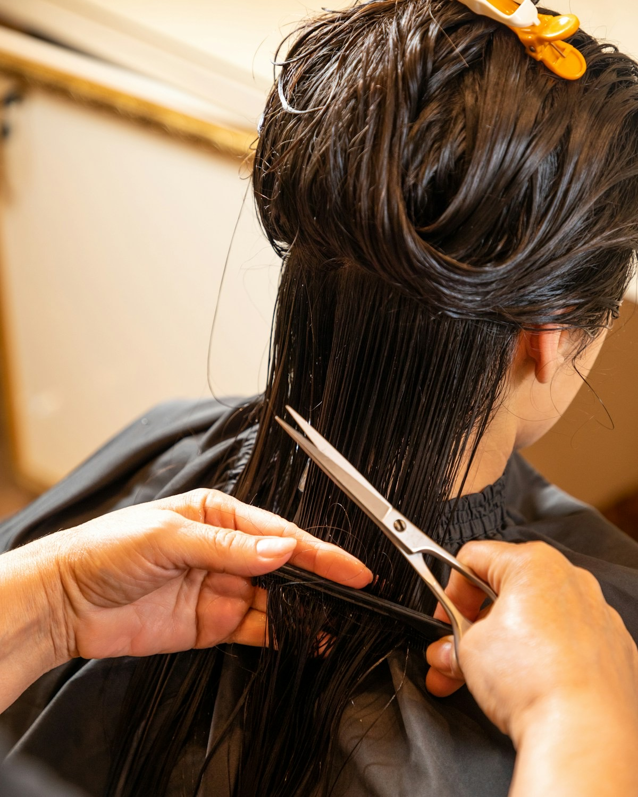
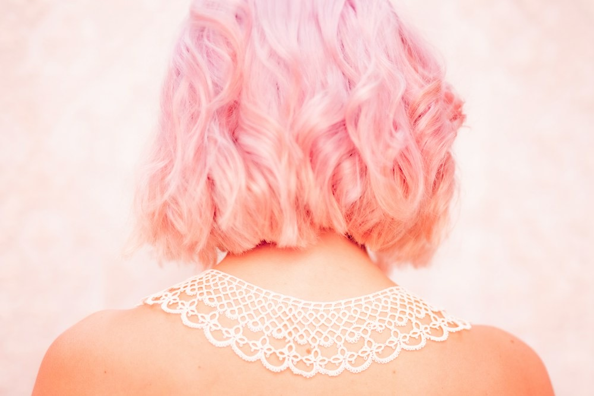
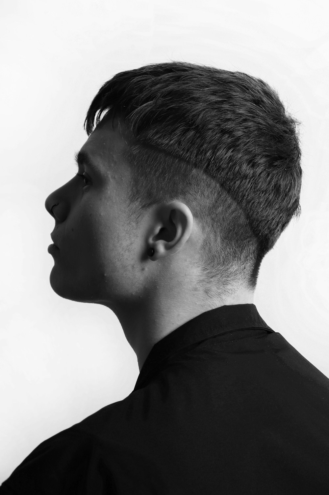
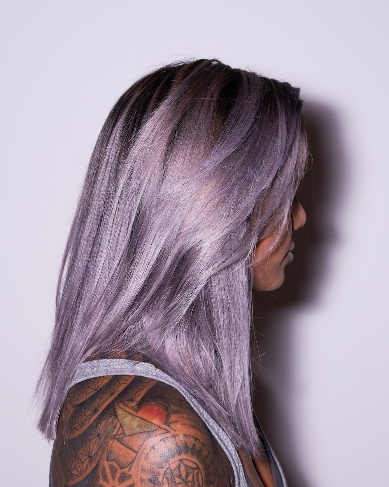
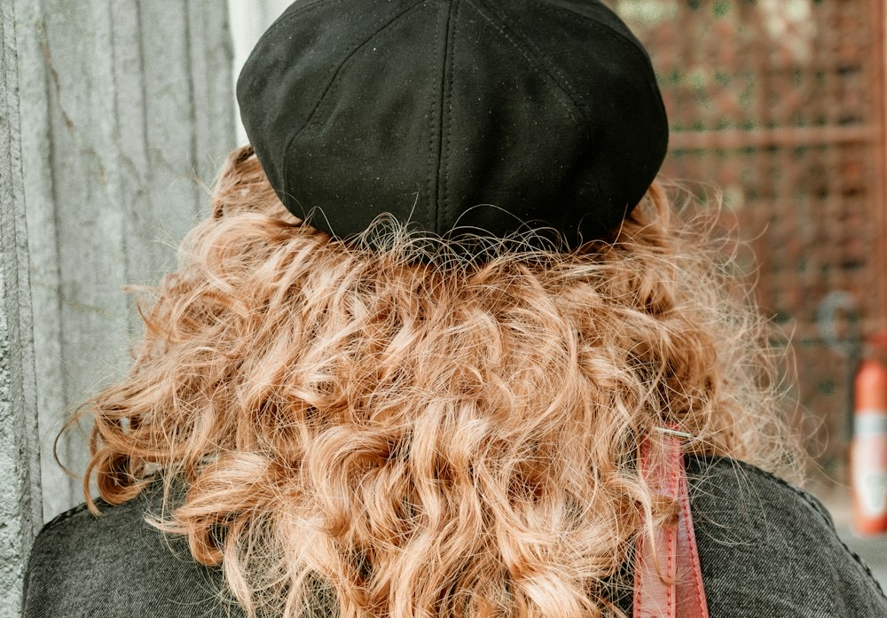
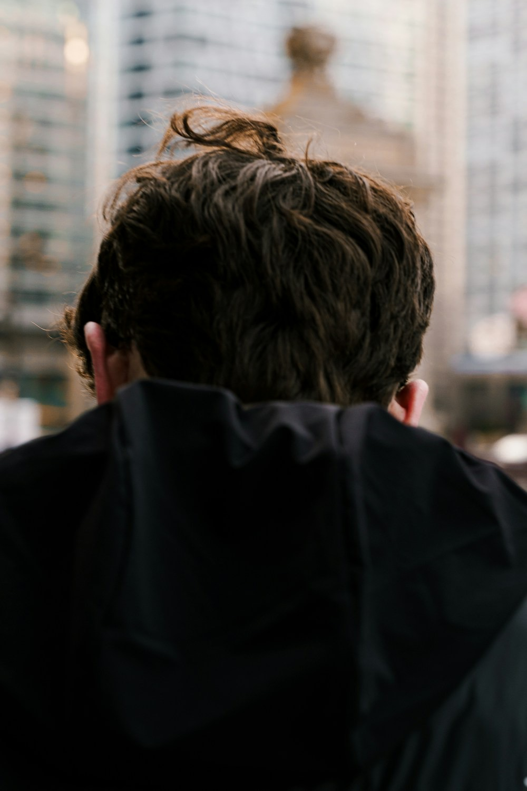
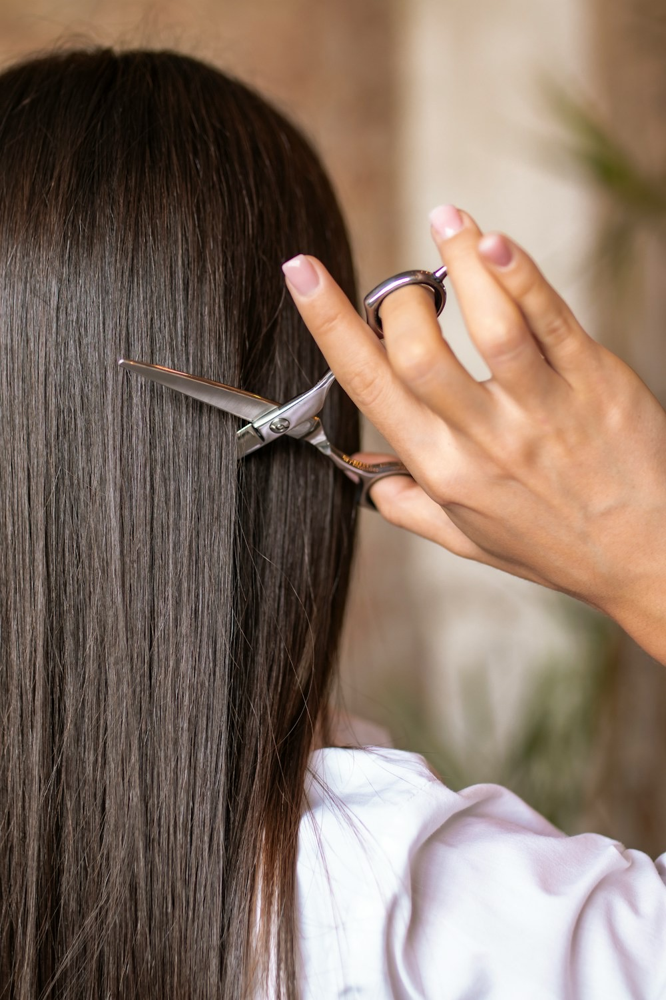
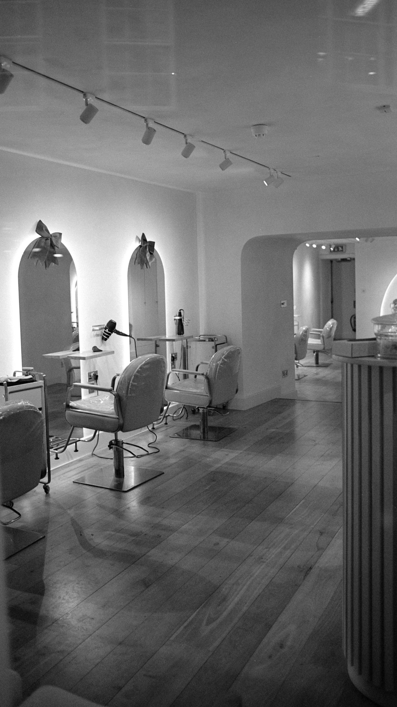

Hair & Design StudioFictional salon / Tokyo
KUSE（クセ）くせを、デザインする。
髪のくせ、骨格、暮らし、好きな服。
その人だけの“くせ”を消さずに、似合わせの材料にする。
KUSEは、技術と感性で「自分らしい」をつくるヘアサロンです。
※本サイトは、東京都内を想定した架空の美容院を題材にした、Web制作ポートフォリオ用の自主制作作品です。実在の店舗・人物・団体とは関係ありません。

01Concept
Your quirks,
by design.

“くせ”は、
いちばんの個性になる。
うねる髪、つむじの向き、骨格、似合う色。多くのサロンが「直す」対象として扱ってきた“くせ”を、私たちはデザインの出発点と考えます。
ファッションやカルチャーの“今”を翻訳しながら、確かなカット技術で、その人にしか似合わないスタイルへ。トレンドを着せるのではなく、あなたに合わせてつくります。
- 01
話す時間を、いちばん大切に
初回は20分前後のカウンセリング。なりたい雰囲気と、毎朝のスタイリング時間まで伺います。
- 02
くせ・骨格から似合わせる
髪質と骨格を見極め、扱いにくさを魅力に変えるラインを設計します。
- 03
家で再現できること
サロンを出たあとも自分で整えられるよう、乾かし方とスタイリングまでお伝えします。
02Style
Style
髪質やライフスタイルに合わせた、KUSEの提案スタイル。
担当スタイリストと、仕上げに使うメニューの目安を添えています。
-

Short / Color
ペールピンクのくせ毛ボブ
- Stylist
- 七尾 ミオ
- Menu
- カット＋デザインカラー
-

Men's / Short
刈り上げショート
- Stylist
- 久遠 慎
- Menu
- メンズカット
-

Long / Color
ラベンダーグレーのロング
- Stylist
- 七尾 ミオ
- Menu
- ブリーチ＋デザインカラー
-

Medium / Curl
くせを活かすカールミディ
- Stylist
- 真柴 遥
- Menu
- くせ毛カット
-

Men's / Perm
無造作テクスチャーマッシュ
- Stylist
- 久遠 慎
- Menu
- カット＋パーマ
-

Long / Straight
自然な艶のストレート
- Stylist
- 早乙女 律
- Menu
- カット＋縮毛矯正
※掲載写真はすべてUnsplashのイメージ写真です。架空サロンの実際の施術事例ではなく、写っている人物は本サイトの設定とは関係ありません。
04Staff
Staff
少人数だからこそ、ひとりひとりの得意をはっきりと。
ご予約の際は、得意分野を目安に担当をお選びください。
-
Owner / Creative Director
真柴 遥Haruka Mashiba
- カット
- 骨格補正
- ショート
都内サロンで12年、撮影やヘアショーのヘアを担当。グラフィックデザインを学んだ経験から、服や写真と調和するバランスを大切にしています。
-
Top Stylist
久遠 慎Shin Kudo
- メンズ
- パーマ
- くせ毛カット
短くても伸びても格好いい、メンズのフォルムづくりが得意。朝5分で決まるスタイルを提案します。
-
Colorist
七尾 ミオMio Nanao
- ハイトーン
- デザインカラー
- ブリーチ
肌の色や服の好みから、似合う色を一緒に探します。色落ちの過程まで楽しめる配合を心がけています。
-
Stylist
早乙女 律Ritsu Saotome
- 縮毛矯正
- 髪質改善
- ナチュラル
「まっすぐすぎない」自然な縮毛矯正が得意。くせと上手に付き合う方法を、髪質に合わせてご提案します。
※スタッフはすべて架空の人物です。実在の美容師・人物とは関係ありません。
05First Visit & FAQ
First visit
はじめての方へ。来店から仕上がりまでの流れと、よくいただくご質問です。
- Step 01
カウンセリング
なりたい雰囲気、普段の服装、スタイリングにかけられる時間を伺います。写真がなくても大丈夫です。
- Step 02
施術
髪質と骨格を確認しながらカット・カラーを進めます。途中で気になることがあれば、いつでもお声がけください。
- Step 03
仕上げとレクチャー
ご自宅での乾かし方とスタイリング方法をお伝えし、次回のおすすめ時期をご案内します。
くせ毛でも、縮毛矯正をしないスタイルは可能ですか？
はい。くせの出方を見てカットラインを決める「くせ毛カット」で、くせを活かしたスタイルをご提案します。ご希望に応じて、部分的な縮毛矯正と組み合わせることもできます。
メンズでも利用できますか？
はい。性別を問わずご利用いただけます。メンズカットを得意とするスタイリストも在籍しています。
ハイトーンにしたいのですが、髪のダメージが心配です。
現在の髪の状態とカラー履歴を伺い、無理のない回数と方法をご提案します。ケアメニューとの組み合わせもご相談ください。
どのくらいの時間がかかりますか？
カットのみで約60分、カット＋カラーで約120分、縮毛矯正で約180分が目安です。初回はカウンセリングの時間を含め、少し長めにお考えください。
06Salon

Salon
- 店名
- KUSE（クセ）
- 運営
- 株式会社クセ・ワークス（架空の企業）
- 営業時間
- 平日 11:00–21:00／土日祝 10:00–19:00
- 定休日
- 毎週火曜日
- 設備
- セット面 5席／シャンプー台 2台／個室 1室
- スタッフ
- 5名（スタイリスト 4名・アシスタント 1名）
- 想定エリア
- 東京都内を想定した架空のサロンです。実在の所在地・アクセス情報はありません。
ご予約について
KUSEは架空のサロンのため、実際のご予約・お問い合わせは受け付けていません。本サイトに掲載している電話番号・SNS・予約サービスはありません。